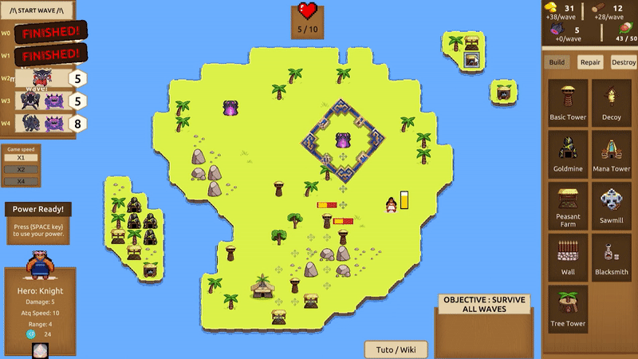

2022 TavroxGames Unity DOTween OdinInspector
When I started my internship at TavroxGames I first worked on the prototype of a game named Protectors of pomelo. It's a tower defense game on the theme of Polynesian islands in the Pacific.
This was my first project in a professional context and I learned a lot. The architecture of the game, the way to call objects, the whole organisation was way more thorough than in the jams I was used to. Of course, at first it was pretty scary but I got used to it and looking back those first months were when I learned the most.
I helped on a lot of aspects of the game and later on even worked on a map editor to make islands from the game. This would simplify the task for level designers, let them avoid the whole Unity interface.
I have very good memories of Protectors of Pomelo and I hope it will get to be published one day.